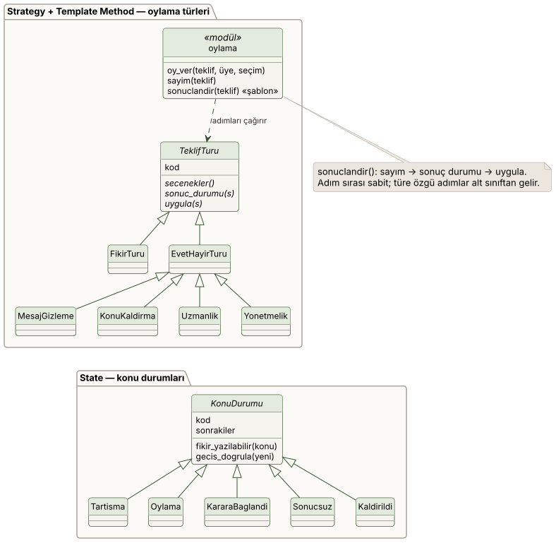

Agora
Konuların tartışılıp oylamayla karara bağlandığı forum — proje raporu
Abdülbaki Bayır
24290050
YZM327 · YAZILIM MÜHENDİSLİĞİ ÖDEVİ
Agora, bir topluluğun bir konuyu tartışıp oylamayla tek bir karara bağladığı bir forumdur. Bir üye konu açar. Konu 24 saat tartışılır; bu sürede her katılımcı en fazla bir fikir yazabilir. Sonra en fazla beş turluk oylama başlar. Her turda az oy alan fikirler elenir. Bir fikir %75'e ulaşırsa ya da tek fikir kalırsa hemen kabul edilir; beşinci turda en çok oyu alan kazanır. Mesajlar silinmez; gizlemek için de oylama gerekir. Her önemli olay, değiştirilemeyen bir kayıt defterine yazılır.
| Ödevde istenen | Agora'daki karşılığı |
|---|---|
| Herkes konu açar, düzenler, silme teklif eder; alt konular | Konu hemen açılır; tartışma sürerken sahibi düzenler (eski hâli saklanır); kaldırma 3/4 oylamayla; alt konu, üst konunun kurallarını yalnızca daraltabilir |
| Çoğunluk kararı; konu sonunda fikir uzlaşması | Tur tur eleme, %75 ezici üstünlük, yeter sayı; sonunda tek fikir karar olur; katılmayan itiraz konusu açar |
| Giriş ekranı; ad soyad, adres, doğum tarihi, şifre, takma ad | Kayıt ve giriş; ad, adres ve doğum tarihi gizli tutulur, yalnızca takma ad görünür; şifre kurtarma kodu |
| Bilgilere göre kısıt (ör. İstanbul konusuna İstanbullular) | Konum (il › ilçe) ve yaş kuralı; kuralı sağlamayan üye o konuda gözlemcidir: okur, oy veremez |
| Herkes eşit, bazıları daha eşit | Kurallar herkese aynı; uzman oyu kendi alanında 10 sayılır ama "çift çoğunluk" kuralıyla dengelenir |
| Kurallar ve uygunluk ontolojiyle ölçülsün; yönetmelik denetlesin | Yönetmeliğin D1–D7 maddeleri konu ve mesajları otomatik denetler; yönetmelik de oylamayla değişir |
| Tartışmalar silinmez; silinecekse oylama | Mesaj silinemez; gizleme 3/4 oylamayla olur ve iz bırakır; düzenlemelerin eski hâli görünür |
| Oy hakkını devretme; azınlığı koruma | Oy devri (genel / kategori / konu, en fazla 5 devir); itiraz konusu, 3/4 eşikler, korunan temel haklar, gizli oy |
| Uygulama + web sitesi | Web sitesi, telefona kurulan web uygulaması (PWA), Android uygulaması (APK), Expo Go, REST API |
| Dağıtık defter; bilirkişi; yapay zeka; kişiler grafta | Üç kopyalı kayıt defteri ve oy makbuzu; uzmanlık oylaması; özet yazan yapay zeka üye; üye ağı (PageRank, Gini) |
| Ders: problem çerçeveleme, SOLID ve tasarım desenleri, UML | Bölüm 11; Bölüm 10; Şekil 1–11 |
| Aktör | Ne yapabilir |
|---|---|
| Ziyaretçi | Konuları ve kayıt defterini okur, arar; kayıt olur, giriş yapar. |
| Üye | Ziyaretçinin yapabildiklerine ek olarak konu açar, mesaj ve fikir yazar, oy verir, oyunu makbuzla doğrular, oy devreder, şikayet eder, uzmanlığa başvurur. |
| Gözlemci | Ayrı bir hesap türü değildir: bir konunun konum ya da yaş kuralını sağlamayan üye o konuda gözlemcidir. Okur ama oy veremez, fikir yazamaz. |
| Uzman | Alanının üyeleri tarafından oylamayla seçilmiş üye. Kendi alanındaki fikir oylamalarında oyu 10 sayılır; oyu herkese açıktır ve gerekçe ister. |
| Yönetici | Ayrı bir yönetici girişiyle panele girer: üyeleri askıya alır, şikayetleri oylamaya taşır, site duyurusu ve yedek gibi işleri yapar. Kararlara karışamaz. |
| Zamanlayıcı (sistem) | Süresi dolan tartışmaları oylamaya geçirir, turları sonuçlandırır. |


| Aşama | Süre | Kural |
|---|---|---|
| Tartışma | 24 saat | Mesajlar ve fikirler yazılır; kişi başına bir fikir |
| 1. tur | 48 saat | %5'in altındaki fikirler elenir; bu turda yeni fikir de yazılabilir |
| 2. tur | 24 saat | %5'in altındakiler elenir |
| 3. tur | 24 saat | %10'un altındakiler elenir |
| 4. tur | 24 saat | %20'nin altındakiler elenir |
| 5. tur | 24 saat | En çok oy alan fikir kabul edilir; eşitlik olursa konu sonuçsuz kalır |
Oran nasıl hesaplanır? (çift çoğunluk) Bir fikrin oranı iki yoldan hesaplanır: ağırlıklı oylara göre (uzman oyu 10 sayılır) ve kişi sayısına göre (herkes 1). Bu ikisinden küçük olanı geçerlidir. Çekimser oylar paydaya girer.
Örnek: 10 kişilik bir oylamada 2 uzman A fikrine oy verir, 8 üye B fikrine. Ağırlıklı payda A 20/28 = %71, kişi payında 2/10 = %20 alır; A'nın oranı %20'dir. B ise 8/28 = %29 ve 8/10 = %80 alır; oranı %29'dur. Böylece birkaç uzman kalabalığı tek başına yenemez, kalabalık da uzmanları yok sayamaz.
| Oylama | Eşik | Süre |
|---|---|---|
| Mesaj gizleme, konu kaldırma | 3/4 | 48 saat |
| Uzmanlık başvurusu (alanın üyeleri oylar) | 2/3 | 48 saat |
| Yeni kategori (bütün üyeler oylar) | Salt çoğunluk | 48 saat |
| Yönetmelik değişikliği | 2/3 | 96 saat |
| Temel hak maddesi ya da korunan parametre | 3/4 | 96 saat |
Bu sayıların hepsi yönetmeliğin parametreleridir ve kodda sabit değildir: topluluk bir parametreyi oylamayla değiştirebilir. Her parametrenin anlamlı bir aralığı vardır (ör. uzman ağırlığı 0 yapılamaz).
Herkes fikir yazabilir; çift çoğunluk; çekimserlerin paydada sayılması; gizleme ve kaldırma için 3/4; temel hak maddelerinin ancak 3/4 ile değişmesi; devir tavanı; uzman kontenjanı; gizli oy; sonuca katılmayanın itiraz konusu açabilmesi.

Uygulama üç katmandan oluşur:
forum/web, 13 modül): HTTP isteklerini karşılar, sayfaları şablonlardan üretir,
REST API sunar. İş kuralı içermez.forum/, 35 modül): Konu, oylama, denetim, uygunluk, defter gibi bütün kurallar
buradadır. Web'den bağımsız olduğu için doğrudan test edilir.Her istek önce aynı zincirden geçer: kimlik → askı → CSRF → zamanlayıcı → yazma kilidi. Zincirin bir adımı yanıt verirse (ör. CSRF anahtarı yanlış) sonraki adımlar çalışmaz.
Aynı anda gelen isteklerde tutarlılık
BEGIN IMMEDIATE ile kilidi alır; iki istek birbirinin arasına giremez.INSERT). Kişi başına tek fikir, veritabanındaki tekil indeksle
korunur. Bu, 8 iş parçacıklı bir testle denetlenir.SAVEPOINT) işler: biri hata verirse yalnızca o geri alınır.
teklif, "seçenek" bir fikir ya da evet/hayır
seçeneğidir.


Yeni bir konu ya da mesaj, yönetmeliğin denetim maddelerinden sırayla geçer. Her maddenin bir ciddiyeti vardır: Engeller (gönderilemez), Uyarır (gönderilir ama yazana uyarı gösterilir) ya da Kapalı. Ciddiyetler de oylamayla değiştirilebilir.
| Madde | Ad | Ne kontrol eder | Varsayılan |
|---|---|---|---|
| D1 | Saygılı dil | Hakaret listesindeki kelimeler (Türkçe çekim ekleriyle) | Uyarır |
| D2 | Kişisel veri | Telefon, e-posta, geçerli T.C. kimlik numarası, IBAN | Engeller |
| D3 | Kategoriye uygunluk | Metin seçilen kategorinin kavramlarını içeriyor mu; içermiyorsa daha uygun kategori önerir | Uyarır |
| D4 | Konum tutarlılığı | Metinde bir yer adı geçiyorsa, katılım kuralı o yerle uyumlu mu | Uyarır |
| D5 | Benzer konu | Benzer başlıkta açık bir konu var mı; varsa o konuya yönlendirir | Uyarır |
| D6 | Alt konu ilişkisi | Alt konu, üst konusuyla aynı alanda (kategoride) mı | Uyarır |
| D7 | Açıklık | Açıklama derdini anlatıyor mu (en az 40 karakter) | Uyarır |
D1 başlangıçta "Engeller" idi; ölçümde masum mesajları da engellediği için "Uyarır" yapıldı (Bölüm 11). Kodda her madde bir zincirin halkasıdır (Chain of Responsibility, Bölüm 10): yeni bir madde eklemek için yeni bir sınıf yazmak yeterlidir.
taahhüt = SHA-256(oylama | seçim | makbuz)
yazılır. Makbuz kodu yalnızca oy verene bir kez gösterilir. Oy veren, makbuzuyla oyunun defterde doğru kaydedildiğini sonradan
kontrol edebilir; başkası makbuz olmadan seçimi göremez.Forumda Bilge adlı bir yapay zeka üye vardır. Yalnızca özet yazar: uzun tartışmaların özeti ve her turun sonucu. Oy vermez, fikir yazmaz, konu açmaz. Özetler kural tabanlıdır; dış bir dil modeli kullanılmaz. Nedenleri:
Bu yüzden özetteki her sayı doğrudan veritabanından gelir. Oranlar yuvarlanmaz, kesilir: %74,9 asla "%75" diye yazılmaz, çünkü %75 ezici üstünlük eşiğidir. Aynı veri her zaman aynı özeti verir; bu testle denetlenir.
Desenler yalnızca somut bir sorunu çözdükleri yerde kullanıldı ("desen amaç değil araçtır", TD-3; gereksiz karmaşıklıktan kaçın, TD-57). Aşağıdaki tablolardaki "önce" sütunu, düzenlemeden önceki kodda gerçekten bulunan sorunu gösterir.
| İlke | Önceki sorun | Şimdi |
|---|---|---|
| S — Tek sorumluluk | 150 satırlık tek bir fonksiyon kimlik, CSRF, zamanlayıcı, hata sayfaları ve şablon filtrelerini birlikte yapıyordu | Her iş ayrı modülde: istek, hata_sayfalari, sablon, denetim, gorunum |
| O — Açık/kapalı | Yeni bir oylama türü 5 dosyada if tip == … dalı eklemek demekti | Yeni tür = yeni sınıf; yeni denetim maddesi = yeni halka; yeni bildirim kanalı = yeni adaptör |
| L — Liskov | Kapalı bildirim kanalı abone kabul edip her gönderimde hata veriyordu | Bütün alt türler üst türün yerine sorunsuz geçer; gerçek ve sahte depolar aynı sonucu verir (testli) |
| I — Arayüz ayrımı | — | Arayüzler küçük: bildirim kanalı 3, denetim maddesi 1, defter deposu 5 yöntem |
| D — Bağımlılığın tersine çevrilmesi | Veritabanı modülü (altyapı) defteri (üst katman) içe aktarıyordu | Defter, veritabanının commit olayına abone olur (Observer); veritabanı defteri tanımaz |
| Desen | Çözdüğü sorun | Agora'daki yeri |
|---|---|---|
| State (TD-43) | durum == … kontrolleri dağınıktı; unutulan biri kaldırılmış konunun geçmişini açık bırakıyordu | konu_durumlari.py: 5 durum sınıfı, izinler ve geçiş tablosu |
| Strategy + Template Method (TD-36, 41) | Altı oylama türünün sonuç kuralları uzun bir if/elif zincirindeydi | teklif_turleri.py: 6 tür; oylama.sonuclandir sabit adım sırası |
| Chain of Responsibility (TD-44) | D1–D7 tek bir 77 satırlık fonksiyondaydı | denetim.py: her madde bir halka |
| Observer (TD-38) | Altyapı katmanı üst katmanı çağırıyordu | Veritabanı commit olayı → defter |
| Repository (TD-51) | Düğüm dosyalarına erişim uzlaşma mantığına gömülüydü; test için disk gerekiyordu | DugumDeposu: SQLite ve bellek gerçeklemeleri |
| Adapter (TD-24) | Web Push ve Firebase'in arayüzleri farklıydı | AnlikKanal: iki kanal tek arayüzde |
| Memento (TD-47) | Bir konudaki hata zamanlayıcının bütün işini geri alıyordu | Kayıt noktası + kuyrukların hatırası |
| Facade (TD-28) | Konu sayfası rotası 7 alt sistemi tek tek çağırıyordu | gorunum.konu_sayfasi() |


Bilerek kullanılmayanlar: Singleton (Python modülü zaten tekildir), Builder, Abstract Factory, Visitor, Mediator;
çözecekleri bir sorun yok. Python'da Iterator, Command ve Factory gibi desenler fonksiyon, kapanış ve sözlükle hafifler; Flask'ın kendisi
de before_request zinciri (Chain of Responsibility) ve @route kaydı (Registry) gibi desenler kullanır.
"Bir forum yapın" isteğinin arkasında altı dert vardı. Üçü yapay zeka işi değildir: söz eşitsizliği, bitmeyen tartışma ve sayıma güvensizlik; bunlar oylama kurallarıyla ve kayıt defteriyle çözüldü. Diğer üçü yapay zeka adayıdır: tartışma özeti, içerik denetimi ve tekrar eden konu. Her bileşen için önce "yapay zeka gerekli mi?" sorusu soruldu (H2-9):
| Bileşen | Görev türü | Karar |
|---|---|---|
| Sayım ve eleme | ML değil | Kural yazıldı: kural yönetmelikte, açıklanabilir olması zorunlu |
| D1 hakaret | İkili sınıflandırma | Etiketli veri yok → bugün kural; gizleme oylamaları ve şikayetler ileride etiket olarak birikir |
| D2 kişisel veri | İkili sınıflandırma | Kural: telefon, e-posta, T.C. kimlik, IBAN biçimleri bellidir |
| D3 kategori önerisi | 7 sınıflı sınıflandırma | Hatası ucuz (yalnızca uyarı) → kural |
| Özet | Metin üretimi | Sayılar kuralla; serbest metin özeti ancak insan onaylı bir modelle |
Problem tanımı (tek cümle, H2-50). Konu ya da mesaj yazan üye, metninin bir kişiyi aşağılayıp aşağılamadığını (D1) ve kişisel veri içerip içermediğini (D2) göndermeden önce görüp düzeltebilsin diye her metin ikili olarak sınıflandırılır. Başarı ölçütü: kurallar dondurulduktan sonra yazılmış, hiç görülmemiş bir örnek kümesinde D1 kesinliği ve F1'i ≥ 0,80, D2 duyarlılığı ≥ 0,80. Bir yapay zeka modeli, kuralı en az +0,10 F1 geçmedikçe onun yerine geçmez.
166 örnek kullanıldı: geliştirme 85, test 43, görülmemiş son küme 38. Kurallar önce "aptal" yöntemlerle karşılaştırıldı: her mesaja "temiz" demek (çoğunluk sınıfı) ve rastgele tahmin (1000 tekrarın ortalaması). Son küme, kurallar dondurulduktan sonra yazıldı ve ölçülmeden önce kaydedildi.
| Madde · metrik | Çoğunluk | Rastgele | Kural · test | Kural · son küme | Ölçüt |
|---|---|---|---|---|---|
| D1 hakaret · kesinlik / F1 | 0 / 0 | 0,53 / 0,50 | 0,83 / 0,83 | 0,71 / 0,71 | sağlanmadı |
| D2 kişisel veri · duyarlılık | 0 | 0,49 | 0,80 | 0,83 | sağlandı |
| D3 kategori · makro F1 | 0,04 | 0,13 | 0,87 | 0,49 | sağlanmadı |
Son kümedeki düşüş, test kümesindeki sonuçların iyimser olduğunu gösterdi. Hataların nedenleri:
| Hata örneği (son küme) | Neden |
|---|---|
| "Aptal telefonlar dönemine dönmek ister misiniz?" → D1 yanlışlıkla engelledi | Kelime bir kişiyi değil nesneyi niteliyor; kelime listesi bağlamı bilmez |
| "Kafana taş mı düştü?" → D1 kaçırdı | Deyimsel hakaret; listede kelime yok |
| "Moda Caddesi No 15 Daire 7…" → D2 kaçırdı | Serbest biçimli adres kalıba uymuyor |
| "Yurtlarda grip aşısı kampanyası" → D3 Sağlık yerine Eğitim dedi | Yalnızca "yurt" eşleşti; "grip" ve "aşı" kavram listesinde yoktu |
Karar. Ölçüt önceden yazıldığı için hedef değiştirilmedi (H2-43). D2 ölçütü sağladı ve engellemeye devam ediyor. D1'in yanlış engel oranı %29'du. Masum bir mesajı engellemenin maliyeti 5, bir hakaretin kaçmasınınki 1 birim sayılırsa (H2-31), engelleyen kural 12, hiçbir şeyi engellememek 7 birim tutar. Bu yüzden D1 artık yalnızca uyarıyor: metin yayımlanır, yazana uyarı gösterilir, kaçan hakareti topluluk gizler. Topluluk isterse oylamayla yeniden "Engeller" yapabilir. Sonraki adım gerçek veri toplamaktır.
Not: Ölçüm örneklerini ve kuralları aynı YZ aracı yazdığı için sayılar iyimser olabilir. Ön-otopsi (H2-47) en büyük riski katılımsızlık olarak gösterdi: kimse oy vermezse yeter sayı oluşmaz ve konular sonuçsuz kalır.
python -m pytest.| Sunucu tarafı yanıt süresi (ms) | Önce | Şimdi |
|---|---|---|
| Oy verme, demo verisi (p95) | 18,6 | 10,1 |
| Oy verme, defterde +50.000 blok (p95) | 645,2 | 9,5 |
| Kayıt defteri sayfası, +50.000 blok (p95) | 1.145,5 | 11,7 |
| Konu akışı, 1.019 konu (p50) | 77,0 | 48,7 |
Hedef p95 < 200 ms. p95: isteklerin %95'i bu süreden hızlı biter. Komut: python olcum/gecikme_olcumu.py.

python calistir.py (Windows'ta baslat.bat). Bütün kullanıcılar aynı
veritabanını paylaşır.| Deney | Sonuç |
|---|---|
| Türkçe ve İngilizce token sayısı | 10 Türkçe cümle, İngilizce çevirisinden ortalama 1,69 (cl100k) ve 1,36 (o200k) kat daha çok token tutuyor. Tek kelime "Avrupalılaştıramadıklarımızdan" 14 ve 12 token. Maliyet, gecikme ve bağlam penceresi kullanımı aynı oranda artar. |
| Sıcaklık | Güncel Claude modelleri sıcaklık parametresini reddettiği için deney yerel bir kelime ikilisi modelinde yapıldı: 10 denemede T = 0 / 0,7 / 1,5 için 1 / 9 / 10 farklı yanıt. Sıcaklık arttıkça yanıtlar çeşitleniyor. |
| Dikkat ısı haritası | Slayttaki NumPy dikkat kodu yeniden üretildi (aşağıda). |
| YZ'nin önerdiği import'lar | 7 paket ve 8 import'un hepsi gerçek çıktı; ama çalıştırınca iki gizli gereksinim ve bir anlam kayması görüldü. |
| YZ'nin yazdığı testler | T.C. kimlik denetiminin 16 testinin 16'sı doğru; ama mutasyon testinde 10 hatadan biri yakalanmadı, çünkü "10. hane hatalı" testi 11. haneyi de bozuyordu. Ders: testlerin geçmesi, kodun doğru olduğunu kanıtlamaz. |

Bu yüzden proje bir prototiptir, gerçek kullanıma açılmış bir ürün değildir.
YZ kullanım beyanı (S01-46, 47; H2-59). Forumun ilk sürümü benim commit'imdir (1 Ekim 2026). Sonraki commit'lerde Claude Code (Anthropic) kodlama aracı kullanıldı: analiz ve tasarım belgeleri, SOLID ve desen düzenlemeleri, hata düzeltmeleri ve testleri, ölçüm betikleri ve örnekleri, tarayıcı sürümü, mini laboratuvar, diyagramlar ve bu rapor. Ürün fikri, ilk sürüm, hedefler, ders kaynakları, kapsam kararları, gözden geçirme ve teslim bana aittir. Testleri de YZ yazdığı için düzeltme testlerinin eski kodda başarısız olduğu ayrıca denetlendi; başarı ölçütleri sonuçlardan önce yazıldı.
Kaynaklar: Ders sunumları (S01, S02, H2, TD); Chip Huyen, Designing Machine Learning Systems
(2022) ve AI Engineering (2025); Gamma vd., Design Patterns (1994). Ayrıntılı belgeler: docs/analiz.md,
docs/tasarim.md, docs/rehber.md; bütün diyagramların kaynakları: docs/rapor/sekiller/.